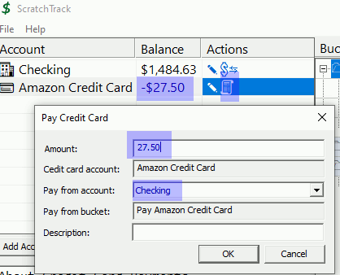
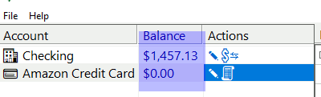
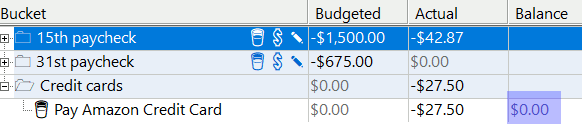
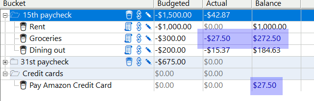

|
| Home |
| FAQ |
| Quick Start Guide |
| Donate |
| File a bug |
ScratchTrack 0.5
Quick Start
Glossary - If you read anything, read this. Seriously. You'll be done in like five minutes.| Term |
Definition |
| Bucket / Envelope / Category-based Budgeting |
All these
budgeting schemes
are fundamentally the same and ScratchTrack follows the same flow.
Expenses are grouped into categories (or buckets, or envelopes). Funds
are assigned to categories. Expenses are tracked against categories.
When a category is out of funds, spending in that category stops until
more funds are added. The first rule of ScratchTrack is that you don't
talk about ScratchTrack, but the second rule is that you don't spend
money you don't have. |
| Category |
Categories
provide an organized view of the funds in accounts. You'll create
categories for different types of expenses (rent, groceries, dining
out, utilities, etcetera) and assign money to them. Understanding
categories is important so we'll do a quick walkthrough:
|
| Account |
In ScratchTrack, unspent funds are always in an account. Funds can be assigned to categories, but again, categories are just a view of the money in the accounts. Money stays in account(s) until spent. |
| Expense | An expense is any kind of outflow of money. An expense is paid from an account and attributed to a category. |
| In-budget account |
An
in-budget account is an account whose balance can be assigned to
categories. If
you have a checking account with $200 and another checking account with
$50, and both are in-budget, you'll have $250 you can assign to
categories. |
| Budgetable Dollars |
Budgetable
dollars is the sum of the balances of all in-budget accounts,
minus any money already assigned to categories. When money is assigned
to
a category, the money stays in the account and the account's balance
doesn't change, but budgetable dollars decreases by that amount. |
| Folder |
Folders
are used to organize categories. I have three
folders in my personal budget. The first two folders align
with paycheck dates and are titled "15th" and "31st". Those folders
contain categories that I contribute to each month and I fill them when
the associated paycheck arrives.The third folder is titled "out of
band" and contains categories that I don't fill on a regular basis. |
| Transaction |
A record
of any cash flow |
ScratchTrack User Interface
ScratchTrack is a single screen application with four main areas
- The accounts list displays accounts and balances
- The budget info window displays budget status
- The folders and categories tree displays folders and categories
- The transaction list displays transactions

Workflow walkthroughs
Walkthrough one: Fred sets up
ScratchTrack
 |
Walkthrough two: Fred gets paid
 |
| Walkthrough three: Fred creates categories Fred has accounts and folders, but he doesn't have a budget. Fred will make a best guess at dividing up his paycheck  |
Walkthrough four: Fred assigns funds to categories |
Walkthrough five: Fred Spends |
Congratulations! At this point, you know the general worklfow, but there's one more to cover: Credit Cards.
| Walkthrough six: Fred gets a credit
card Fred has learned that he can get 5% back on his Amazon purchases if he pays with an Amazon credit card. This sounds good to Fred (and I agree!) so he gets one.  |
| Walkthrough five: Fred's credit card
bill is due The time has come for Fred to pay his credit card bill. He hasn't made any additional credit card purchases, so the bill is $27.50. Fred clicks the 'Pay Credit Card' icon next to the Amazon account. He also could've right clicked to get there. He sets the payment amount $27.50.  After payment, the checking balance is reduced, and the credit card balance is cleared.  The money from the credit card payment bucket is used automatically for this payment and it's balance is back at zero:  As is the case with all transactions, it's displayed in the transaction list and can be edited by right click or double click:  |